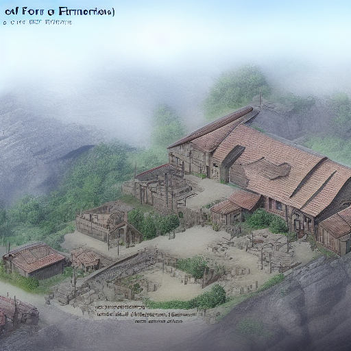

You approach the Forge of Origins
A warm glow draws the paladin towards a cavernous forge. Here, weapons of old are in various stages of creation, overseen by spectral blacksmiths. One of them, recognising the Warhammer, offers to enhance its powers using the mystic flames of the forge.

Hand your weapon to the blacksmith
Continue Exploring